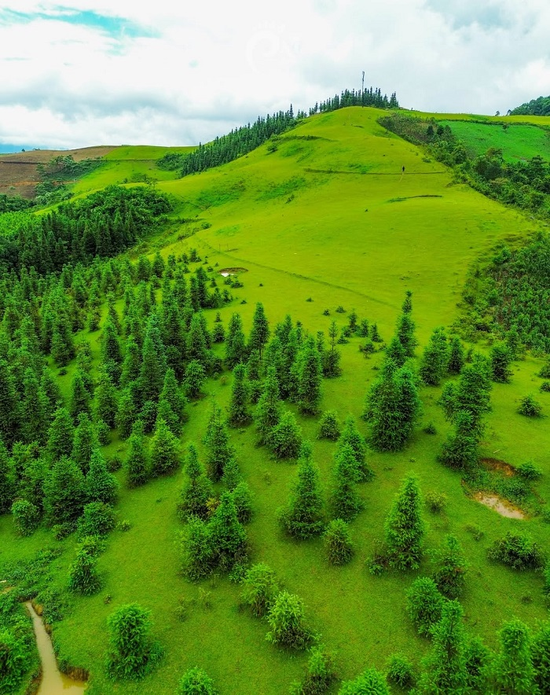

01 / VĂN HÓA
01 / VĂN HÓASắc màu chợ phiên
Sáng Chủ nhật, gặp Bắc Hà trong những gian hàng, sắc thổ cẩm và nhịp chuyện trò của người đi chợ.
Tìm trên bản đồ ↗
Từ sớm Chủ nhật ở chợ phiên đến buổi chiều trên đồi cỏ, dành vài ngày để khám phá cao nguyên theo nhịp của bạn.
Khám phá trải nghiệmBắt đầu từ một phiên chợ, rồi dành thêm thời gian cho những vẻ đẹp quanh mình.
01 / VĂN HÓASáng Chủ nhật, gặp Bắc Hà trong những gian hàng, sắc thổ cẩm và nhịp chuyện trò của người đi chợ.
Tìm trên bản đồ ↗Xuân về theo hoa mận trắng. Đến mùa hè, những vườn mận tam hoa lại mang một sắc màu khác.
Tìm hiểu mùa mận ↗Dừng chân bên công trình kiến trúc gắn với lịch sử Bắc Hà, để hành trình có thêm một lát cắt quá khứ.
Tìm trên bản đồ ↗Những triền cỏ xanh, hàng thông và khoảng trời rộng. Một góc Bắc Hà dành cho bước chân thong thả và những người yêu thiên nhiên.
Khám phá Cốc Sâm → Thêm vào lộ trình ↓Một điểm dừng ngắm cảnh trong hành trình phía nam Bắc Hà.
Xem vị trí ↗ Thêm vào lộ trình ↓Thêm một điểm ngắm cảnh cho khoảng chiều thong thả.
Xem vị trí ↗ Thêm vào lộ trình ↓Điểm nghỉ chân được bạn cung cấp. Hỏi cơ sở về phòng và dịch vụ trước khi đến.
Xem vị trí ↗ Thêm vào lộ trình ↓Điểm thiên nhiên để bổ sung vào hành trình phía bắc trung tâm.
Xem vị trí ↗ Thêm vào lộ trình ↓Điểm dừng văn hóa tại khu vực Bảo Nhai. Giữ trang phục và ứng xử phù hợp khi tham quan.
Xem vị trí ↗ Thêm vào lộ trình ↓Điểm khám phá ở khu vực Bảo Nhai. Xác nhận cách tiếp cận và điều kiện tham quan tại địa phương.
Xem vị trí ↗ Thêm vào lộ trình ↓Dùng nơi lưu trú làm điểm xuất phát cho các chuyến đi trong ngày. Khi chọn chỗ ở, hãy hỏi trước về phòng trống, bữa sáng và chỗ đỗ xe.
Xem gợi ý ăn ở theo ngày ↗Chọn số ngày để xem gợi ý đi chơi, ăn uống và nghỉ ở. Mở từng ngày hoặc mở toàn bộ để chụp màn hình mang theo.
Lịch trình bắt đầu khi bạn đã đến Bắc Hà; chưa gồm chặng đi và về nơi xuất phát. Chợ phiên dành cho sáng Chủ nhật: hãy đổi thứ tự ngày nếu chuyến đi có Chủ nhật, hoặc thay bằng dạo trung tâm. Giờ là gợi ý linh hoạt; kiểm tra đường đi và điều kiện tham quan trước khi khởi hành.
Chọn số ngày trước, rồi chọn các điểm muốn đến. Một ngày chọn 3–5 điểm; chuyến dài ngày có thể chọn thêm và chia theo từng ngày.
Hiện có 7 điểm trên bản đồ. Các điểm bạn chọn được lưu trên trình duyệt này.
Sơ đồ vị trí tương đối, các đường nối thể hiện thứ tự ghé thăm. Mở Google Maps để xem đường đi thực tế.
Vị trí dựa trên ảnh Google Maps bạn cung cấp. Thứ tự ghé thăm là gợi ý, chưa tối ưu quãng đường. Kiểm tra điều kiện đường và giờ hoạt động trước chuyến đi; một số điểm có thể cần đi bộ hoặc phương tiện địa phương.
Đến như một vị khách, lắng nghe và trân trọng nếp sống của người dân địa phương.
Chợ phiên Bắc Hà họp vào Chủ nhật. Bạn có thể dành buổi sáng để đi chợ và trải nghiệm nhịp sinh hoạt địa phương.
Mang giày dễ đi bộ, áo khoác, đồ che mưa và tiền mặt. Kiểm tra dự báo thời tiết gần ngày đi để điều chỉnh hành lý.
Xin phép trước khi chụp ảnh người dân. Giữ vệ sinh, hỏi giá trước khi mua và tôn trọng không gian sinh hoạt riêng.
Tham khảo Vietnam Tourism về phiên chợ Chủ nhật, Vietnam Airlines về điểm đến, và trang du lịch nông thôn của Cục Du lịch Quốc gia Việt Nam về mận tam hoa. Lịch trình là gợi ý biên soạn của website.